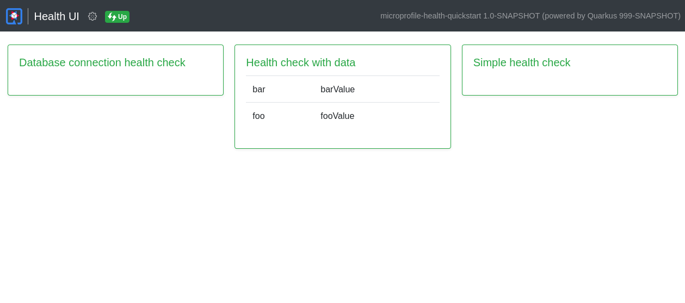

SmallRye Health
このガイドでは、 MicroProfile Health仕様の実装である SmallRye HealthをQuarkusアプリケーションで使用する方法を説明します。
SmallRye Healthは、アプリケーションがその状態に関する情報を外部のビューアーに提供することを可能にします。これは、典型的には自動化されたプロセスがアプリケーションを破棄すべきか再起動すべきかを判断できなければならないクラウド環境において、有用です。
前提条件
このガイドを完成させるには、以下が必要です:
-
約15分
-
IDE
-
JDK 11+ がインストールされ、
JAVA_HOMEが適切に設定されていること -
Apache Maven 3.9.3
-
使用したい場合は、 Quarkus CLI
-
ネイティブ実行可能ファイルをビルドしたい場合、MandrelまたはGraalVM（あるいはネイティブなコンテナビルドを使用する場合はDocker）をインストールし、 適切に設定していること
アーキテクチャ
このガイドでは、仕様に従って /q/health/live および /q/health/ready エンドポイントで MicroProfile Health 機能を公開するシンプルな REST アプリケーションを構築します。
ソリューション
次の章で紹介する手順に沿って、ステップを踏んでアプリを作成することをお勧めします。ただし、完成した例にそのまま進んでも構いません。
Gitレポジトリをクローンするか git clone -b 3.2 https://github.com/quarkusio/quarkus-quickstarts.git 、 アーカイブ をダウンロードします。
ソリューションは microprofile-health-quickstart ディレクトリ にあります。
Mavenプロジェクトの作成
まず、新しいプロジェクトが必要です。以下のコマンドで新規プロジェクトを作成します。
このコマンドは、 smallrye-health エクステンションをインポートしたプロジェクトを生成します。
すでにQuarkusプロジェクトが設定されている場合は、プロジェクトのベースディレクトリで以下のコマンドを実行することで、 smallrye-health エクステンションをプロジェクトに追加することができます。
quarkus extension add 'smallrye-health'./mvnw quarkus:add-extension -Dextensions='smallrye-health'./gradlew addExtension --extensions='smallrye-health'これにより、 pom.xml に以下が追加されます:
<dependency>
<groupId>io.quarkus</groupId>
<artifactId>quarkus-smallrye-health</artifactId>
</dependency>implementation("io.quarkus:quarkus-smallrye-health")ヘルスチェックの実行
smallrye-health エクステンションを直接インポートすると、3つのRESTエンドポイントが公開されます。
-
/q/health/live- アプリケーションが稼働していること -
/q/health/ready- アプリケーションは、リクエストに対応する準備ができていること -
/q/health/started- アプリケーションが開始されていること -
/q/health- アプリケーションのすべてのヘルスチェック手順の累積
smallrye-health エクステンションが期待通りに動作しているかのチェック
-
Quarkusアプリケーションを次のように起動します:
コマンドラインインタフェースquarkus devMaven./mvnw quarkus:devGradle./gradlew --console=plain quarkusDev -
http://localhost:8080/q/health/liveエンドポイントにブラウザか、curl http://localhost:8080/q/health/liveでアクセス
すべての health RESTエンドポイントは、2つのフィールドを持つシンプルなJSONオブジェクトを返します:
-
status— the overall result of all the health check procedures -
checks— an array of individual checks
ヘルスチェックの一般的な status は、宣言されたすべてのヘルスチェックの論理的な AND として計算されます。 checks 配列は、まだヘルスチェックの手順を指定していないので空ですが、いくつか定義してみましょう。
|
マネジメントインターフェース
デフォルトでは、ヘルスチェックはメインのHTTPサーバー上で公開されます。 |
初めてのヘルスチェックの作成
このセクションでは、最初の簡単なヘルスチェック手順を作成します。
org.acme.microprofile.health.SimpleHealthCheck クラスを作成
package org.acme.microprofile.health;
import org.eclipse.microprofile.health.HealthCheck;
import org.eclipse.microprofile.health.HealthCheckResponse;
import org.eclipse.microprofile.health.Liveness;
import jakarta.enterprise.context.ApplicationScoped;
@Liveness
@ApplicationScoped (1) (2)
public class SimpleHealthCheck implements HealthCheck {
@Override
public HealthCheckResponse call() {
return HealthCheckResponse.up("Simple health check");
}
}| 1 | すべてのヘルスチェック要求に単一のBeanインスタンスが使用されるように、ヘルスチェッククラスに @ApplicationScoped または @Singleton のスコープでアノテーションを付けることをお勧めします。 |
| 2 | ヘルスチェックアノテーションの1つでアノテーションされたBeanクラスがスコープを宣言していない場合、 @Singleton のスコープが自動的に使用されます。 |
ご覧のように、ヘルスチェック・プロシージャは、 HealthCheck インターフェースを実装するCDI Beanとして定義され、次のようなヘルスチェック修飾子の1つでアノテーションされています。
-
@Liveness-/q/health/liveでアクセス可能なLivenessチェック -
@Readiness-/q/health/readyでアクセス可能なReadinessチェック
HealthCheck は関数インターフェースで、その単一のメソッド call は HealthCheckResponse オブジェクトを返します。このオブジェクトは、例で示した fluent builder API で簡単に構築することができます。
Quarkusアプリケーションを開発モードで起動しているので、 http://localhost:8080/q/health/live へのリクエストを ブラウザウィンドウを更新するか curl http://localhost:8080/q/health/live で単に繰り返してください。ヘルスチェックをlivenessプロシージャ（ @Liveness 修飾子付き）と定義したため、新しいヘルスチェックプロシージャが checks 配列に存在するようになりました。
おめでとうございます。初めてのQuarkus Health Checkプロシージャを作成しました。続けて、SmallRye Healthで他にどのようなことができるかを調べてみましょう。
レディネス・ヘルスチェック手順の追加
前のセクションでは、アプリケーションが実行されているかどうかを示す単純な liveness ヘルスチェックプロシージャを作成しました。このセクションでは、アプリケーションがリクエストを処理することができるかどうかを示すことができるReadinessヘルスチェックを作成します。
ここでは、データベースなどの外部サービスプロバイダへの接続をシミュレートする別のヘルスチェックプロシージャを作成します。まずは、アプリケーションの準備ができていることを示すレスポンスを常に返すようにします。
org.acme.microprofile.health.DatabaseConnectionHealthCheck クラスを作成します。
package org.acme.microprofile.health;
import org.eclipse.microprofile.health.HealthCheck;
import org.eclipse.microprofile.health.HealthCheckResponse;
import org.eclipse.microprofile.health.Readiness;
import jakarta.enterprise.context.ApplicationScoped;
@Readiness
@ApplicationScoped
public class DatabaseConnectionHealthCheck implements HealthCheck {
@Override
public HealthCheckResponse call() {
return HealthCheckResponse.up("Database connection health check");
}
}http://localhost:8080/q/health/live のヘルスチェックを再実行すると、 checks の配列には、以前に定義した SimpleHealthCheck のみが含まれます。これは @Liveness という修飾子で定義された唯一のチェックだからです。しかし、次のようにアクセスすると http://localhost:8080/q/health/ready (ブラウザや curl http://localhost:8080/q/health/ready)にアクセスすると、 Database connection health check のみが表示されます。これは、Readinessヘルスチェック手順として @Readiness の修飾子で定義された唯一のヘルスチェックだからです。
http://localhost:8080/q/health にアクセスすると、両方のチェックが戻ってきます。
|
どのような状況でどのヘルスチェック手順を使用すべきかについての詳細は、MicroProfile Health 仕様に記載されています。一般的には、liveness手続きはアプリケーションを再起動すべきかどうかを判断し、readiness手続きはアプリケーションにリクエストを出すことが意味のあることかどうかを判断します。
スタートアップヘルスチェックプロシージャの追加
ヘルスチェックプロシージャの最後の3つ目のタイプはスタートアップです。スタートアッププロシージャは、起動が遅いコンテナ（Quarkusでは必要ないはず）のオプションとして定義されており、起動が初めてUPに応答すると起動から引き継がれるliveness probeの呼び出しを遅らせることができます。スタートアップのヘルスチェックは、 @Startup で定義されます。
io.quarkus.runtime.Startup と不幸にも衝突してしまうため、microprofile org.eclipse.microprofile.health.Startup のアノテーションを必ずインポートしてください。
|
org.acme.microprofile.health.SimpleHealthCheck クラスを作成:
package org.acme.microprofile.health;
import org.eclipse.microprofile.health.HealthCheck;
import org.eclipse.microprofile.health.HealthCheckResponse;
import org.eclipse.microprofile.health.Startup;
import jakarta.enterprise.context.ApplicationScoped;
@Startup
@ApplicationScoped
public class StartupHealthCheck implements HealthCheck {
@Override
public HealthCheckResponse call() {
return HealthCheckResponse.up("Startup health check");
}
}http://localhost:8080/q/health/live エンドポイントにブラウザか、 curl http://localhost:8080/q/health/live でアクセスします:
ネガティブヘルスチェックの手順
このセクションでは、 Database connection health check を拡張して、基礎となるデータベース接続が確立できないために、アプリケーションがリクエストを処理する準備ができていないことを示すオプションを追加します。簡略化のため、データベースにアクセスできるかどうかの判断は、設定プロパティでのみ行います。
org.acme.microprofile.health.DatabaseConnectionHealthCheck クラスを以下のように更新します。
package org.acme.microprofile.health;
import org.eclipse.microprofile.config.inject.ConfigProperty;
import org.eclipse.microprofile.health.HealthCheck;
import org.eclipse.microprofile.health.HealthCheckResponse;
import org.eclipse.microprofile.health.HealthCheckResponseBuilder;
import org.eclipse.microprofile.health.Readiness;
import jakarta.enterprise.context.ApplicationScoped;
@Readiness
@ApplicationScoped
public class DatabaseConnectionHealthCheck implements HealthCheck {
@ConfigProperty(name = "database.up", defaultValue = "false")
private boolean databaseUp;
@Override
public HealthCheckResponse call() {
HealthCheckResponseBuilder responseBuilder = HealthCheckResponse.named("Database connection health check");
try {
simulateDatabaseConnectionVerification();
responseBuilder.up();
} catch (IllegalStateException e) {
// cannot access the database
responseBuilder.down();
}
return responseBuilder.build();
}
private void simulateDatabaseConnectionVerification() {
if (!databaseUp) {
throw new IllegalStateException("Cannot contact database");
}
}
}
これまでは、レスポンスオブジェクトを直接構築する HealthCheckResponse#up(String) （ HealthCheckResponse#down(String) もあります）を通して HealthCheckResponse を構築するという単純な方法を使っていました。今後は、 HealthCheckResponseBuilder クラスが提供するビルダー機能をフルに活用します。
|
再度、Readinessヘルスチェック http://localhost:8080/q/health/ready)を再実行すると、全ての status がDOWNするはずです。また、以下の場所でlivenessチェックを行うこともできます。 http://localhost:8080/q/health/live`この場合、全体の `status はUPです。これは、Readinessチェックの影響を受けないためです。
このアプリケーションをreadiness チェックを DOWN 状態のままにしておいてはいけないため、また、
Quarkus を開発モードで実行しているため、 database.up=true を src/main/resources/application.properties に追加し、
readiness ヘルスチェックを再度実行できます。 — 再びupになるはずです。
ヘルスチェックのレスポンスにユーザー固有のデータを追加
前のセクションでは、最小限の属性、すなわちヘルスチェック名とそのステータス（UPまたはDOWN）のみを持つ単純なヘルスチェックを作成する方法を説明しました。しかし、MicroProfile Health仕様では、アプリケーションが任意のデータを、コンシューマーに送信されるキー・バリュー・ペアの形で供給する方法も提供しています。これは、ヘルスチェックレスポンスビルダーAPIの withData(key, value) メソッドを使用することで可能です。
新しいヘルスチェック・プロシージャ org.acme.microprofile.health.DataHealthCheck を作成してみましょう。
package org.acme.microprofile.health;
import org.eclipse.microprofile.health.Liveness;
import org.eclipse.microprofile.health.HealthCheck;
import org.eclipse.microprofile.health.HealthCheckResponse;
import jakarta.enterprise.context.ApplicationScoped;
@Liveness
@ApplicationScoped
public class DataHealthCheck implements HealthCheck {
@Override
public HealthCheckResponse call() {
return HealthCheckResponse.named("Health check with data")
.up()
.withData("foo", "fooValue")
.withData("bar", "barValue")
.build();
}
}/q/health/live エンドポイントにアクセスしてLivenessヘルスチェック・プロシージャを再実行すると、新しいヘルスチェック Health check with data が checks 配列に存在していることがわかります。このチェックには、 data という新しい属性が含まれています。この属性は、ヘルスチェック手順で定義したプロパティで構成されるJSONオブジェクトです。
この機能は、ヘルスチェックの応答と一緒にエラーを渡すことができる障害シナリオで特に有用です。
try {
simulateDatabaseConnectionVerification();
responseBuilder.up();
} catch (IllegalStateException e) {
// cannot access the database
responseBuilder.down()
.withData("error", e.getMessage()); // pass the exception message
}ヘルスチェック呼び出しへのコンテキストの伝搬
パフォーマンス上の理由から、コンテキスト（例：CDIまたはセキュリティ・コンテキスト）は各ヘルスチェック呼び出しに伝搬されません。しかし、この機能を有効にする必要がある場合は、 quarkus.smallrye-health.context-propagation=true を設定して、すべてのヘルスチェック呼び出しにコンテキストの伝搬を許可することができます。
リアクティブヘルスチェック
MicroProfile Healthは現在、reactive型の戻り値をサポートしていませんが、SmallRye Healthはサポートしています。
リアクティブなヘルスチェックを行いたい場合は、 org.eclipse.microprofile.health.HealthCheck の代わりに io.smallrye.health.api.AsyncHealthCheck のインターフェイスを実装することができます。 io.smallrye.health.api.AsyncHealthCheck インターフェイスでは、 Uni<HealthCheckResponse> を返すことができます。
以下の例では、リアクティブなLivenessチェックを行っています:
import io.smallrye.health.api.AsyncHealthCheck;
import org.eclipse.microprofile.health.Liveness;
import org.eclipse.microprofile.health.HealthCheckResponse;
import jakarta.enterprise.context.ApplicationScoped;
@Liveness
@ApplicationScoped
public class LivenessAsync implements AsyncHealthCheck {
@Override
public Uni<HealthCheckResponse> call() {
return Uni.createFrom().item(HealthCheckResponse.up("liveness-reactive"))
.onItem().delayIt().by(Duration.ofMillis(10));
}
}エクステンションのヘルスチェック
一部のエクステンションでは、デフォルトのヘルスチェックを提供している場合があり、その場合、エクステンションは自動的にヘルスチェックを登録します。
例えば、Quarkusのデータソースを管理するために使用される quarkus-agroal は、各 データソースのヘルスチェック を検証するReadinessのヘルスチェックを自動的に登録します。
エクステンションのヘルスチェックは、プロパティ（ quarkus.health.extensions.enabled ）で無効にすることができ、自動的に登録されることはありません。
Health UI
| 実験的 - MicroProfileの仕様に含まれません |
health-ui はヘルスチェックの内容をWeb GUIで確認することができます。
Quarkusの smallrye-health エクステンションは、 health-ui を同梱しており、devおよびtestモードでデフォルトで有効になりますが、productionモードでも同様に明示的に設定することができます。
health-ui は、 http://localhost:8080/q/health-ui/ からアクセスできます。

マネジメントインターフェース
デフォルトでは、ヘルスチェックはメインのHTTPサーバー上で公開されます。アプリケーションの設定で quarkus.management.enabled=true を設定することで、別のネットワークインターフェイスとポートで公開することができます。このプロパティは、ビルド時のプロパティであることに注意してください。実行時に値をオーバーライドすることはできません。
マネジメントネットワークインターフェースとポートをカスタマイズせずにマネジメントインターフェースを有効にした場合、ヘルスチェックは以下のように公開されます： http://0.0.0.0:9000/q/health . quarkus.smallrye-health.root-path プロパティを使用して、 path （前の URL の health セグメント）を設定することができます。
詳しくは、 マネジメントインターフェイスのリファレンス を参照してください。
まとめ
SmallRye Healthは、アプリケーションが正常に機能できるかどうかを示すために、 アプリケーションの健全性に関する情報を得る方法を提供します。Liveness チェックは、アプリケーションを再起動すべきかどうかを判断するために使用され、Readinessチェックは、アプリケーションがリクエストを処理できるかどうかを判断するために使用されます。
QuarkusでSmallRye Healthの機能を有効にするために必要なのは
-
quarkus-maven-pluginでsmallrye-healthQuarkusエクステンションをプロジェクトに追加します:コマンドラインインタフェースquarkus extension add 'smallrye-health'Maven./mvnw quarkus:add-extension -Dextensions='smallrye-health'Gradle./gradlew addExtension --extensions='smallrye-health' -
または、以下のMavenの依存関係を単純に追加することもできます。
pom.xml<dependency> <groupId>io.quarkus</groupId> <artifactId>quarkus-smallrye-health</artifactId> </dependency>build.gradleimplementation("io.quarkus:quarkus-smallrye-health")
設定リファレンス
ビルド時に固定される設定プロパティ - 他のすべての設定プロパティは実行時にオーバーライド可能
型 |
デフォルト |
|
|---|---|---|
Whether extensions published health check should be enabled. Environment variable: Show more |
boolean |
|
Whether to include the Liveness and Readiness Health endpoints in the generated OpenAPI document Environment variable: Show more |
boolean |
|
Root path for health-checking endpoints. By default, this value will be resolved as a path relative to Environment variable: Show more |
string |
|
The relative path of the liveness health-checking endpoint. By default, this value will be resolved as a path relative to Environment variable: Show more |
string |
|
The relative path of the readiness health-checking endpoint. By default, this value will be resolved as a path relative to Environment variable: Show more |
string |
|
The relative path of the health group endpoint. By default, this value will be resolved as a path relative to Environment variable: Show more |
string |
|
The relative path of the wellness health-checking endpoint. By default, this value will be resolved as a path relative to Environment variable: Show more |
string |
|
The relative path of the startup health-checking endpoint. By default, this value will be resolved as a path relative to Environment variable: Show more |
string |
|
Whether the context should be propagated to each health check invocation. Environment variable: Show more |
boolean |
|
The number of the maximum health groups that can be created. Environment variable: Show more |
int |
|
The name of the default health group used when no other health group is defined on the health check. Environment variable: Show more |
string |
|
If management interface is turned on the health endpoints and ui will be published under the management interface. This allows you to exclude Health from management by setting the value to false Environment variable: Show more |
boolean |
|
If Health UI should be enabled. By default, Health UI is enabled if it is included (see Environment variable: Show more |
boolean |
|
Additional top-level properties to be included in the resulting JSON object. Environment variable: Show more |
|
|
Whether the HealthCheck should be enabled. Environment variable: Show more |
boolean |
|
型 |
デフォルト |
|
The path where Health UI is available. The value Environment variable: Show more |
string |
|
Always include the UI. By default, this will only be included in dev and test. Setting this to true will also include the UI in Prod Environment variable: Show more |
boolean |
|